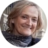
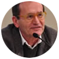
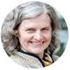
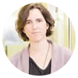

RRI2018
Ethics and Responsible Research & Innovation in Research
Friday 16th March 2018
Institut de Ciència de Materials de Barcelona (ICMAB-CSIC)
Responsible Research & Innovation (RRI) is a concept that has gained visibility and importance in the recent years, and involves the participation of multiple actors (researchers, citizens, policy makers, business, third sector organisations, etc. ) in the research and innovation process, enabling easier access to scientific results, the take up of gender and ethics in the research and innovation content and process, and formal and informal science education.
With the aim of introducing this concept to the research community at ICMAB, and in collaboration with the Marie-Curie Initial Training Network (ITN) i-Switch, this workshop gather several experts from the field that will provide us with some insights on how to deal with some of the aspects included in RRI, from ethics and gender aspects in research to integrity and scientific misconduct. There will be also two practical workshops focusing on the promotion of RRI and the available methods to implement it.
Prof. Pilar Goya
(Instituto de Química Médica, IQM-CSIC)
‘Ethics in research: good scientific practices’
Prof. Katharina Al-Shamery
(University of Oldenburg, Germany)
‘Scientific misconduct in publication of research results’
Prof. Britta Thomsen
(Copenhagen Business School, Denmark):
‘Gender perspectives in research: current trends and ways of improvement and facing the future of the EU’s FP9’
Coffee break
Prof. Stefano Ossicini
(University of Modena, Italy):
‘Integrity, misconduct and the structure of the scientific research’
Prof. Miguel García Guerrero
(Presidente del Comité de Ética, CSIC):
‘Research Ethics and Integrity in Europe. Provisions in Horizon 2020’
Lunch break
Rosina Malagrida
(Institut de Recerca de la Sida, IrsiCaixa):
Responsible Research and Innovation (RRI) for a more open R&I system in Europe
Coffee break
Rosina Malagrida
Practical workshops (limited seats, registration needed):
- Workshop I: ‘Is it necessary to rethink the way R&I is performed’
- Workshop II: ‘Methodologies to open the research process‘

Prof. Pilar Goya (Instituto de Química Médica, IQM-CSIC):
Doctor in Chemistry by the Complutense University in Madrid (UCM), from 2001 Prof. Goya is Research Professor at CSIC. She was Director of the Medicinal Chemistry Institute of CSIC (IQM) for 5 years, and also responsible of the Department of International Relations of CSIC. Evaluator of research proposals under the V and VI framework programme, she is author of more than 150 publications, co-inventor of a dozen of international patents and has directed more than 10 doctoral theses. She has been vice-president of the Spanish Royal Society of Chemistry (RSEQ) and is currently the president of the Spanish Society for Therapeutic Chemistry (SEQT). Recently, she has been elected president of EuCHeMS (European Association for Chemical and Molecular Sciences).
Prof. Miguel García Guerrero (Presidente del Comité de Ética, CSIC):
Doctor in Biological Chemistry and full professor of Biology and Molecular Biology, Prof. Guerrero has been linked to research activities since 195, with more than 100 publications and several patents. He has played several institutional roles at CSIC, as director of the General Foundation or Vicepresident of Organization and Institutional Relations; and from July 2012 he is the president of the CSIC Ethics Committee, which is in charge of reflecting, emitting reports and formulate recommendations about the ethical principles related to research activities. Prof. Guerrero has delivered numerous lectures related to ethics in sicentific publications and in research projects, with a particular focus on European projects under FP7 and H2020.
http://www.csic.es/etica-en-la-investigacion
Prof. Britta Thomsen (Copenhagen Business School, Denmark):
Britta Thomsen is at present adjunct professor at Copenhagen Business School (CBS) in The Department of Digitalization.Owner of Britta Thomsen Consulting, she was member of the European Parliament from 2004-2014, and a full member during the whole term of the Committee on Women's Rights and Gender Equality. From 2004 until 2007, Prof. Thomsen was full member of the committee of Industry and Research including vice-chair from 2004-2007. She is also collaborating with the European Institute for Gender Equality in Vilnius. Prof. Thomsen has delivered numerous talks and presentations in the field of gender issues and gender aspects in research.

Prof. Stefano Ossicini (University of Modena, Italy):
Full Professor and Group Leader of the Nanostructures modelling Group at the University of Modena and Reggio Emilia, Prof. Ossicini graduated in Physics at the University of Rome "La Sapienza". From 2004 to 2006 he was coordinator of the PhD in Physics and from 2006 to 2010 dean of the PhD School in Nano and Physical Sciences of the University of Modena and Reggio Emilia. From 2007 to 2010 he was vice dean of the faculty of Engineering II of the university of Modena and Reggio Emilia and from 2010 Director of the Interdipartimental Center "En&Tech" on active and passive energy saving. He has published more than 130 articles and supervised more than 10 PhD thesis. Prof. Ossicini is also proactive in dissemination and outreach activities, having published several articles and received some awards. He has delivered several talks regarding misconduct and fraud in scientific research, and published the book “The Universe is made of stories, not only of atoms: a brief story about scientific fraud”.
http://personale.unimore.it/rubrica/dettaglio/ossicini

Prof. Katharina Al-Shamery (University of Oldenburg, Germany)

Rosina Malagrida (Institut de Recerca de la Sida, IrsiCaixa):
Rosina is one of the biggest experts at national level in the field of RRI. Responsible of the health Living lab, coordinator of the European educational portal Xplore Health, subcoordinator of the European programme RRI Tools and principal investigator of the European project EnRRICH. She has a Degree in Chemistry by the University of Barcelona, master in Scientific Communication at the Imperial College London, and postgraduate studies in Strategic Direction of Communication at ESADE. Rosina has worked as communication director of the Barcelona Scientific Park (PCB) and at the science museums in Barcelona and London.
http://www.irsicaixa.es/es/rosina-malagrida
This Workshop is free to attend but early registration is necessary. Preference will be given to PhD students and young researchers. The afternoon workshops are practical sessions, and therefore there is a number of limited spaces available for each workshop. Please follow this link in order to register for the event:
Address:
Meeting Room INSTITUT DE CIÈNCIA DE MATERIALS DE BARCELONA (ICMAB-CSIC)
Campus de la Universitat Autònoma de Barcelona
08193 Bellaterra, Catalunya, Espanya